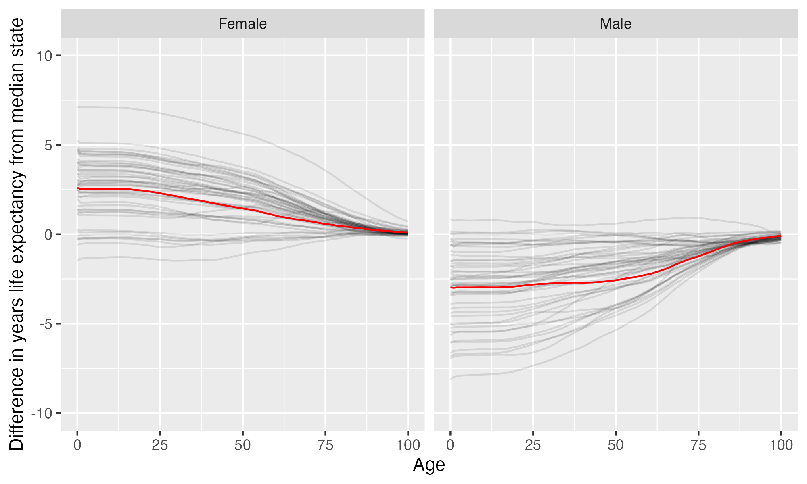

Quest College
Quest College is located in San Antonio, Texas. It is a private for-profit, 2-year institution.
From Wikipedia: Brightwood College, formerly Kaplan College, was a system of for-profit colleges in the United States, owned and operated by Education Corporation of America. Main qualifications offered included health, business, criminal justice, information technology, nursing and professional training (trades) programs. On December 5, 2018, Brightwood’s parent company, Education Corporation of America, announced unexpectedly via an email that all of its schools would be closing in two business days. Staff were terminated without legally required notice.
.
Notes
These are items that bear looking into more closely.
This institution’s revenues have tended to decrease over time.
California considers the state this institution is in to have one or more anti-LGBTQ+ laws. It prohibits California-sponsored travel to this state as a safety measure. See more here.
The state attorney general has sought to identify transgender individuals from state drivers license data. Family and protective services have been ordered to investigate all parents of transgender children for abuse, as well.
There are apparently no tenure stream faculty. This can indicate a risk to academic freedom and thus educational quality, as faculty members may be able to lose their positions because of their speech, publications, or research findings.
From 2011 to 2021, full time undergraduate enrollment dropped from 348 to 299, a decline of 14.1%
Overview of institution
Institution kind: Not applicable, not in Carnegie universe (not accredited or nondegree-granting)
Undergrad program: Not applicable, not in Carnegie universe (not accredited or nondegree-granting)
Graduate program: Not applicable, not in Carnegie universe (not accredited or nondegree-granting)
Enrollment profile: Not applicable, not in Carnegie universe (not accredited or nondegree-granting) (see more details below)
Average net price for undergrads on financial aid: $19,109 (1.4 times the equivalent cost of Harvard).
Average net price for families with $30K-48K income: $18,888 (This is $17,492 more expensive than what Harvard costs for equivalent students).
Actual price for your family: Go here to see what your family may be asked to pay. It can be MUCH lower than the average price but also higher for some.
Size and setting: Not applicable, not in Carnegie universe (not accredited or nondegree-granting)
In state percentage: 100.0% of first year students come from Texas
In US percentage: 100.0% of first year students come from the US (note that 0.0% have no residence reported)
Student to tenure-stream faculty ratio: NA (undergrads to tenure-stream faculty) [Tenure explained]
Student to faculty ratio: 18.4 (undergrads to all faculty)
Degrees offered: Certificate of less than 1 year, Certificate of less than 12 weeks, Certificate of at least 12 weeks but less than 1 year, Certificate of at least 1 year but less than 2 years, Associate’s degree
Schedule: Differs by program
Institution provides on campus housing: No
Freshmen required to live on campus: No
Meal plan: No
Covid vaccination requirement for students: This institution was never reported as requiring covid vaccination for students (based on info from here)
Covid vaccination requirement for faculty/staff: This institution was never reported as requiring covid vaccination for faculty and/or staff (based on info from here)
Advanced placement (AP) credits used: Implied no
Disabilities: 3 percent or less of undergrads are registered as having disabilities.
Overview of location
- Abortion in this state: Most restrictive (based on https://states.guttmacher.org/policies/ as of May 10, 2023)
- Gun law stringency: F (higher grade = more stringent)
- State rep support for contraception: 33.3% of US reps from this state voted in favor of legal protections for contraception.
- State rep support for recognizing same-sex and interracial marriage: 36.1% of US reps from this state voted in favor of requiring states to recognize same-sex and interracial marriages performed in other states
- Anti-trans legislative risk: Worst (based on Erin Reed’s work, as of May 19, 2023)
- Ecological region: Texas blackland prairies
- Biome: Temperate Grasslands, Savannas & Shrublands
- Distance to mountains: 180.6 miles to North American Cordillera
- Climate: See overview at WeatherSpark
Similar institutions
This is using information about school size, acceptance rate, yield rate, graduation rate, cost, athletic conference, and similar metrics, but it can miss important axes of similarity (for example, culinary versus hair styling schools).
Map
Enrollment
| Quest College | Change over ≤ 11 years | |
|---|---|---|
| Undergrads (full time) | 299 (2021) |

|
| Undergrads (part time) | 0 (2021) |

|
Student financing
At many universities, almost no students pay the listed tuition and fees (“sticker price”): instead, their financial aid package lowers this dramatically, but how much students pay can vary substantially based on family income and other factors. The tuition below is the average across many students receiving aid: your family may be asked to pay less or more than this.
| Quest College | Change over ≤ 11 years | Trend | |
|---|---|---|---|
| Average net price (for students awarded aid) | $19,109 (2020) |

|
↑ $621 per year |
| Undergrads getting federal aid | 69% (2021) |

|
|
| Undergrads getting any aid | 100% (2021) |

|
|
| Undergrads getting Pell grants | 69% (2021) |

|
Teaching
| Quest College | Change over ≤ 11 years | |
|---|---|---|
| Undergrads per instructor (lower is better) | 18 (2015) |

|
| Total instructors | 1 (2020) |

|
| Non-tenure track instructors | 1 (2020) |

|
Student details
Institution finances
| Quest College | Change over ≤ 11 years | Trend | |
|---|---|---|---|
| Revenue from tution and fees | 85% (2021) |

|
|
| Revenue minus expenses | $891,865 (2021) |

|
|
| Revenue | $4.4 M (2021) |

|
↓ -$208,873 per year |
| Expenses | $3.5 M (2021) |

|
↓ -$217,447 per year |
| Assets | $3.1 M (2021) |

|
Graduation rates
Graduation rates for bachelor’s degrees within 150% of normal time (6 years for a 4-year degree). Note that this uses US federal demographic data: it only has two genders and a specified set of ethnicities and races. For groups with small numbers, the graduation rate may be highly variable year to year (do all three people in this group graduate this year or just two of three, for example).
Freshmen demographics
Demographic data for first time degree-seeking students. Note that this uses US federal demographic data: it only has two genders and a specified set of ethnicities and races.
| Quest College | Change over ≤ 11 years | |
|---|---|---|
| Men (percent freshmen) | 5.5% (2021) |

|
| Women (percent freshmen) | 95% (2021) |

|
| American Indian or Alaska Native men (percent freshmen) | 0% (2021) |

|
| American Indian or Alaska Native women (percent freshmen) | 0.3% (2021) |

|
| Asian men (percent freshmen) | 0% (2021) |

|
| Asian women (percent freshmen) | 0.7% (2021) |

|
| Black or African American men (percent freshmen) | 1.4% (2021) |

|
| Black or African American women (percent freshmen) | 17% (2021) |

|
| Hispanic men (percent freshmen) | 3.8% (2021) |

|
| Hispanic women (percent freshmen) | 66% (2021) |

|
| Native Hawaiian or Other Pacific Islander men (percent freshmen) | 0% (2021) |

|
| Native Hawaiian or Other Pacific Islander women (percent freshmen) | 0% (2021) |

|
| White men (percent freshmen) | 0.3% (2021) |

|
| White women (percent freshmen) | 7.9% (2021) |

|
| Two or more races men (percent freshmen) | 0% (2021) |

|
| Two or more races women (percent freshmen) | 0% (2021) |

|
| Race ethnicity unknown men (percent freshmen) | 0% (2021) |

|
| Race ethnicity unknown women (percent freshmen) | 2.7% (2021) |

|
| Nonresident alien men (percent freshmen) | 0% (2021) |

|
| Nonresident alien women (percent freshmen) | 0% (2021) |

|
Freshmen geography
| Quest College | Change over ≤ 11 years | |
|---|---|---|
| In state | 100% (2020) |

|
| US | 100% (2020) |

|
| Not reported | 0% (2020) |

|
Tenure track faculty
Tenure track faculty are those who are eligible for tenure. This includes both pre-tenure and tenured faculty. Once faculty get tenure, they are (generally) protected from being fired for intellectual reasons, helping to ensure their freedom in teaching and research. They can still lose their positions for misconduct, financial problems, not fulfilling their duties, or other reasons. Note that this chart uses US federal demographic data: it only has two genders and a specified set of ethnicities and races.
Non-tenure track faculty
Non-tenure track faculty are not eligible for tenure. Some are hired one semester at a time, some have multi-year contracts. They typically have a higher teaching load than tenure track faculty, leaving less time for research or other creative endeavors. They are also easier to fire than tenured faculty. Sometimes they are external experts (a noted musician, a former senator) who are hired to teach some classes without the expected permanence of a tenure-track position. Note that this chart uses US federal demographic data: it only has two genders and a specified set of ethnicities and races.
| Quest College | Change over ≤ 11 years | |
|---|---|---|
| Total (non-tenure-track count) | 1 (2020) |

|
| Women (non-tenure-track count) | 0 (2020) |

|
| Men (non-tenure-track count) | 1 (2020) |

|
| American Indian or Alaska Native (non-tenure-track count) | 0 (2020) |

|
| Asian (non-tenure-track count) | 0 (2020) |

|
| Black or African American (non-tenure-track count) | 1 (2020) |

|
| Hispanic or Latino (non-tenure-track count) | 0 (2020) |

|
| Native Hawaiian or other Pacific Islander (non-tenure-track count) | 0 (2020) |

|
| White (non-tenure-track count) | 0 (2020) |

|
| Two or more races (non-tenure-track count) | 0 (2020) |

|
| Nonresident alien (non-tenure-track count) | 0 (2020) |

|
Library facilities
Life expectancy
This hopefully will not be relevant for potential students, but it may be for people moving to an area longer term, such as faculty and staff choosing where to live. This uses information from US National Vital Statistics Reports for 2020; like much federal data, it assumes people are male or female. For age difference from median, it is from the median state, averaging across all genders (one consequence of this is that the difference from the median life expectancy is almost always negative for men).
- Life expectancy at birth: 79.3 years women (2.6 years over the median), 73.7 years men (3 years below the median)
- Remaining life expectancy at age 18: 61.9 years women (2.5 years over the median), 56.5 years men (2.9 years below the median)
- Remaining life expectancy at age 30: 50.3 years women (2.1 years over the median), 45.4 years men (2.8 years below the median)
- Remaining life expectancy at age 45: 36.1 years women (1.6 years over the median), 31.9 years men (2.7 years below the median)
- Remaining life expectancy at age 60: 23 years women (1 years over the median), 19.7 years men (2.2 years below the median)
We can also plot the extra / fewer years of life expected for this state (red) compared to other states (dark gray) at each age. Again, this is normalized for the median state.
